Gas Turbine Operation and Control
8
Learning Outcome
When you complete this learning material, you will be able to:
Describe general routine and major maintenance requirements, and detailed operating and troubleshooting procedures for gas turbine engines.
Learning Objectives
You will specifically be able to complete the following tasks:
- 1. Describe the components and operation of gas turbine supervisory and control systems.
- 2. Describe the principles and design of gas turbine protection devices.
- 3. Describe the detailed hot and cold startup procedures for a gas turbine, including safety precautions.
- 4. Describe the detailed shutdown procedure for a gas turbine, including safety precautions.
- 5. Explain the routine maintenance and monitoring requirements for a gas turbine.
- 6. Describe the major maintenance and overhaul requirements for a gas turbine.
- 7. Explain the troubleshooting of gas turbine problems.
Objective 1
Describe the components and operation of gas turbine supervisory and control systems.
INTRODUCTION
Plant supervisory and gas turbine control systems have undergone major changes. Advances in computerization and information technology continue to impact gas turbine control. However, the fundamentals of gas turbine control remain fairly constant.
Control of a gas turbine exists at three levels:
- • Plant
- • Gas turbine
- • Closed loop
PLANT LEVEL CONTROLS
The control system of a gas turbine is usually integrated with a higher-level process control system, often referred to as the supervisory control system. This manages the overall control of the facility itself and provides the master control setpoint (or setpoint range) for the driven load. The supervisory control system also has the ability to stop and start the gas turbine and monitor and track its critical operating parameters. The supervisory control system may be located at the gas turbine itself or located in a centralized control room with the other plant control systems (like a facility wide DCS system).
The control of a gas turbine is linked to the load device. If the gas turbine is connected to a generator, the objective is to operate the generator at a constant frequency or generator speed. For a mechanical load such as a compressor, the required power output and speed of the power turbine depends on a setpoint (such as suction pressure, discharge pressure, or flow) and will vary with demand.
One common control system uses a computer network referred to as a DCS (Distributed Control System). Separate computers are used for the station (overall) control and for individual unit (or gas turbine) control. They are interconnected by a high speed computer network. Unit control is performed by a PLC (Programmable Logic Controller).
Some vendors supply specific control system packages with their equipment that are considered “proprietary.” Therefore, the specific control logic, software and functional strategies cannot be analysed or modified by the purchaser. These systems are sometimes called “black boxes” because their “brains” cannot be read or changed by the purchaser. This unit control is interfaced to instrumentation and sequencing inputs and outputs.
The control system is accessed through an operator interface called an HMI (Human Machine Interface) which has largely replaced most of the analog systems with their associated strip charts, single instrument displays and individual control instruments. An example of a control system network is shown in Fig. 1.
![Figure 1: Gas Turbine Control System Network diagram. The central component is the FT-210 (Operator Interface and Network Interface) which includes functions like Long Term Trending, Continuous Trending, Event Logging, Maintenance Scheduling, and Diagnostic Control. It is connected to Color CRT Display(s), Hard Disk & Backup Drive, and Printers. The FT-210 is connected to a HUB, which is also connected to FT-110 or FT-50 Station Control and FT-110 or FT-50 Unit Control. The FT-300 Programming Terminal is connected to the FT-210. The FT-110 or FT-50 Unit Control is connected to Graphic displays (FT-110 only), meters, lights and pushbuttons. The FT-110 or FT-50 Station Control is connected to Graphic displays (FT-110 only), meters, lights and pushbuttons. The FT-110 or FT-50 Unit Control is also connected to Sequencing inputs and Analog outputs.](9e6062272bbe3ddbb7c0606721d64cf0_img.jpg)
graph TD
FT210[FT-210
Operator Interface and Network Interface
- Long Term Trending
- Continuous Trending
- Event Logging
- Maintenance Scheduling
- Diagnostic Control]
FT300[FT-300
Programming Terminal]
FT110_50_Unit[FT-110 or FT-50
Unit Control]
FT110_50_Station[FT-110 or FT-50
Station Control]
HUB[HUB]
CRT[Color CRT Display(s)]
Disk[Hard Disk & Backup Drive]
Printers[Printers]
Gateway[Gateway or Telemetering]
FT110_50_UnitControl[FT-110 or FT-50
Unit Control]
FT110_50_StationControl[FT-110 or FT-50
Station Control]
FT210 --- HUB
FT300 --- FT210
FT210 --- Gateway
FT210 --- FT110_50_Unit
FT210 --- FT110_50_Station
CRT --- FT210
Disk --- FT210
Printers --- FT210
HUB --- FT110_50_UnitControl
HUB --- FT110_50_StationControl
FT110_50_UnitControl --- UnitControlGraphics[Graphic displays
(FT-110 only)
meters
lights and pushbuttons]
FT110_50_StationControl --- StationControlGraphics[Graphic displays
(FT-110 only)
meters
lights and pushbuttons]
FT110_50_UnitControl --- UnitControlDetails[Unit Control
- Sequencing
- Alarm Monitoring
- Performance Control
- Fuel Control
- Surge Control
- Data Logging
- I/O Modules
- Plug Modules]
UnitControlDetails --- IO[Sequencing inputs
Analog outputs]
Figure 1
Gas Turbine Control System Network
(Courtesy of Rolls Royce)
GAS TURBINE LEVEL CONTROLS
In most control systems, the control functions are performed by a specialized computer (PLC). This computer is programmed with specialized control logic, called ladder logic, which describes the instructions needed to perform all the necessary control, sequencing, logic, and other functions. It has largely replaced pneumatics, relays, and specialized analog controls.
The PLC interfaces with instrumentation and devices through I/O (input/output) cards that receive:
- • Analog inputs (e.g. pressures and temperatures)
- • Analog outputs (e.g. fuel gas valve position)
- • Digital inputs (e.g. whether the oil pump is running)
- • Digital outputs (e.g. a signal to turn on a pump)
- • Frequency inputs (e.g. rotor speed)
Some control systems use multiple processors for double and even triple redundancy. Other systems use two out of three voting logic for critical input signals, such as speed, to ensure high reliability and equipment protection (e.g. overspeed protection).
Every control system has a control panel with an operator interface (HMI). It allows an operator to:
- • Startup or shutdown the gas turbine
- • Control the turbines speed
- • Modify the control system logic (with special access rights)
- • Monitor measured parameters.
An example of the gas turbine level control is shown in Fig. 2.
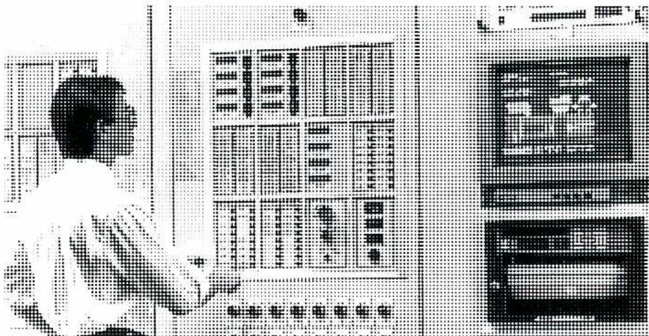
Figure 2
Gas Turbine Control Panel and HMI
(Courtesy of Rolls Royce)
Control System Functions
The major function of a control system is to ensure correct sequencing during startup and shutdown. The details of this function are fully covered in Objectives 3 and 4.
The control system must safely control the flow of fuel to the combustors to ensure that the gas turbine efficiently drives the process load under all conditions. It positions the fuel metering valve based upon load or demand (e.g. generator frequency or compressor discharge pressure).
Changes in demand loading requires a very controlled “ramp up” or “ramp down” response from the gas turbine control system as a rapid increase or decrease in acceleration can cause surge, flame out or other combustion problems..
Depending on ambient temperature, there are maximum limits to operation. At higher ambient temperatures, a gas turbine is limited by exhaust gas temperature to ensure that temperature limits for combustion and turbine section components are not exceeded. At lower ambient temperatures, a gas turbine is limited by rotor speed to regulate the stresses placed on rotor blades. For dual shaft gas turbines, there are minimum and maximum limits on power turbine speed.
Additional controls are required for bleed valves and variable guide vanes. Sometimes, these controls are independent, but it is becoming common to include them in the main gas turbine control system. Both bleed valve and variable guide vane operations are controlled by the main gas turbine controller using a calculation embedded into the logic sequencing that matches their positions to a specific startup time line and engine speed.
Another function of the control system is to indicate when abnormal levels are reached by generating an alarm, or by shutting down the gas turbine under certain conditions. Protective systems are described in Objective 2.
Instrumentation
The control and monitoring system of a gas turbine normally incorporates instrumentation to monitor the following conditions:
- • Rotor speed for each shaft (r/min)
- • Inlet temperature to the compressor, combustors and turbine (°C)
- • Differential pressure across the intake filters (Pa)
- • Compressor discharge pressure (kPa), measured at the exit of the compressor and before combustion begins.
- • Exhaust gas temperatures (°C), usually measured at multiple circumferential points and as an average, after the first or second turbine stage, or in between the engine turbine and power turbine
- • Vibration, measured using accelerometers mounted on the engine case if anti-friction bearings are used (applies to most aeroderivatives)
- • Vibration, measured using eddy-current displacement probes if journal or tilt-pad bearings are used (applies to most heavy-duty gas turbines)
- • Bearing temperatures (°C), measured if journal or tilt-pad bearings are used (applies to most heavy-duty gas turbines)
- • Inlet guide vane and variable stator vane position (angle in degrees)
- • Fuel gas flow, pressure, and temperature
- • Oil system pressures and temperatures
- • Generator output, or compressor shaft power (kW)
CLOSED LOOP CONTROLS
Some controls are independent devices directly controlled by the main gas turbine control system.
Examples of these type of controls include:
- • Engine bleed valves that are positioned by a speed signal and ambient temperature
- • Oil cooler that is controlled by a thermostatic valve that controls the amount of oil going to or bypassing the cooler
- • Pressure regulators that limit oil pressure after the main lube oil pump.
Objective 2
Describe the principles and design of gas turbine protection devices.
INTRODUCTION
Protective devices prevent abnormal operating conditions, both for safety purposes and to protect equipment. In some cases, the control system first produces an alarm which can take one or more of the following forms:
- • A flashing light on the control system computer or panel
- • An audible horn
- • An alarm sent to a remote supervisory system
- • A message sent to a pager
In some instances, if a higher level is reached, or if the alarm is not acknowledged in a certain time period, the control system may initiate a shutdown.
For critical shutdowns, the fuel valve is immediately closed. In less critical situations, a normal stop with a normal cooldown is used.
Fig. 3 shows an example of a protective shutdown system. It features not only triple redundant control processors, but also a separate triple redundant protection module which is hardwired independently and has its own hydraulic trip system. This protects against overspeed and loss of flame and checks generator synchronization. There will be links to other equipment or parts of the system within the facility, such as a steam turbine or HRSG in a combined cycle operation, to ensure that all connected or impacted equipment will be protected.
![Figure 3: Gas Turbine Protection System block diagram. The diagram shows various input sensors on the left connected to a central control and protection section. Inputs include Blade Path Temperature, Primary Overspeed, Combustion Monitor, Exhaust Overtemp, Rotor Vibration, Compressor Surge, Hi Lube Oil Header Temp, Fire Protection System, Generator Synch Check, Electronic Hardwired Overspeed, Loss of Flame, Generator Synchronization, and Customer Protection Shutdown. These connect to three control processors (A, B, and T), an Interface Data Processor, and an Independent Protective Module. These components are linked to a Trip Card. The Trip Card connects to a Fuel Control System and a Hydraulic Trip System. The Fuel Control System connects to a Fuel Control Valve and a Fuel Stop Ratio Valve, both leading to 'Fuel to Turbine'. The Hydraulic Trip System connects to a Steam Turbine Stop Valve and a Steam Cycle Trip System. At the bottom, there are four additional trip inputs: Manual Emergency Trip, Low Hydraulic Supply or Trip Pressure, Low Lube Oil Pressure, and Manual Hydraulic Trip, which all feed into the Trip Card.](a5ee5c23b6dc52ec1d724b76d5a5f58f_img.jpg)
Figure 3
Gas Turbine Protection System
(Courtesy of GE Power Systems)
TYPES OF PROTECTION
Protection may require one of the following actions:
- • Alarm only
- • Alarm at one level and shutdown at a higher (or lower) level
- • Shutdown with normal cooldown
- • Fast shutdown with no cooldown
- • Activation of auxiliary or support systems
Combustion Protection
Combustion protection includes:
- • High exhaust gas temperature (fast shutdown)
- • High exhaust gas temperature spread (alarm only)
- • Loss of flame (fast shutdown)
- • Ignition failure on startup (fast shutdown)
Overspeed Protection
Overspeed protection includes:
- • High gas turbine rotor speed for single shaft units (fast shutdown)
- • High power turbine rotor speed for dual or multiple shaft units (fast shutdown)
- • Mechanical and electronic overspeed devices for turbine protection
Vibration Protection
Vibration protection includes:
- • High vibration for any transducer (alarm and fast shutdown)
Fuel Gas Supply System Protection
Fuel gas supply system protection includes:
- • High fuel gas supply pressure (alarm and fast shutdown)
- • Low fuel gas supply pressure (alarm only)
Fuel Oil/Liquid Fuel System Protection
Fuel oil/liquid fuel system protection includes:
- • Low fuel pump suction pressure
- • High and low differential pressure across the fuel manifold
- • Fuel supply header low or high pressure
- • Fuel transfer failure
Oil System Protection
Oil system protection includes:
- • Low oil pressure (fast shutdown)
- • Low lube oil tank temperature (alarm only)
- • High lube oil header temperature (alarm and fast shutdown)
- • High bearing temperature (alarm and fast shutdown)
- • Low oil level (alarm and shutdown)
- • High oil filter differential pressure (alarm only)
Intake System Protection
Air intake system protection includes:
- • High air filter differential pressure (alarm only)
- • High and low compressor inlet temperature (alarm)
Fire and Gas Protection
Fire and gas system protection includes:
- • Fire detection (fast shutdown)
- • Presence of gas detected in the gas turbine enclosure (alarm and fast shutdown)
Objective 3
Describe the detailed hot and cold startup procedures for a gas turbine, including safety precautions.
INTRODUCTION
The startup of a gas turbine requires a specific sequencing. It is extremely important that the operator be completely competent in all the relevant procedures and the various steps that must be executed to ensure the safety of personnel and protect the equipment from potential damage. In general, the control system handles all the steps required for a startup. Manual intervention is not necessary unless there is an unscheduled trip or shutdown.
The following description applies to most gas turbines, but will vary according to the type of engine, its application and use, and specific installation and environmental conditions.
Gas turbine operators should understand and be fully aware of written procedures and manuals provided by manufacturers, equipment packagers, and the operating company. Procedures and guidelines provided by the manufacturer and/or equipment packager need to be strictly followed. Equipment operators may also have their own practices and procedures that need to be understood and followed.
The startup and shutdown of a gas turbine may be triggered automatically if predetermined conditions occur. For example, a backup power generation unit may start automatically in response to an increase in demand, or a compressor may start if the pressure drops in a given process. Often, operators monitoring the overall process will initiate a start manually. Once a startup or shutdown is initiated, the sequencing is almost always automatic.
STEPS TO START A GAS TURBINE
The basic steps in starting a gas turbine are:
- 1. Preparing for startup
- 2. Start initiation
- 3. Crank and lightoff
- 4. Acceleration phase
- 5. Synchronization phase
- 6. Operational phase
These steps must happen in a specific sequence and at certain time intervals. They are usually managed by the control system. The operator often has no role except to watch the process. If certain conditions occur, or if specific requirements are not met at some point in the startup sequence, the startup will be aborted and the unit stopped.
Preparing for Startup
Different startup preparation activities are needed for:
- • Normal startup for frequently used equipment
- • Normal startup for intermittently used or backup equipment
- • Startup after routine or minor maintenance
- • Startup after major maintenance or overhaul
If the equipment is used frequently and maintenance work has not been done recently, only a few checks are required. These may include a walk-around and visual inspection of the engine to check for:
- • Leaks in the oil system (including pumps, fittings, piping and tubing)
- • Oil tank and sump level
- • Air intake obstructions
- • Correct placement and secure fastening of all guards and covers
- • General hazards
If the equipment has been shut down for an extended period of time, the operator should check that all the following auxiliary equipment and support systems are activated and energized:
- • Electrical
- • Pneumatic
- • Fuel
- • Instrumentation
- • Lubrication
- • System controllers
These systems may have been shutdown and need to be activated before the startup is initiated. If routine, minor, or major maintenance has been done recently, the work area has to be cleaned and all tools, parts and supplies removed prior to startup. Shutoff valves may need to be opened or unlocked. Other maintenance-specific steps may need to be taken, and a more thorough pre-start inspection may be required.
For remote applications, startup normally occurs automatically without human participation or intervention, unless an abnormal situation requires response. If a previous malfunction or abnormal condition has occurred, the system may need to be reset. This is done by pressing a reset switch on a control panel or on a computer screen. There are also a number of permissives that need to be satisfied before the control system can initiate a start sequence. Some of these pertain to gas turbines (such as minimum oil reservoir temperature), and others are required by generators or compressors.
Start Initiation
A gas turbine operates in one of two modes: remote or local. The mode of operation is set either by a switch on the control panel or by a selection box on a computer screen. When in remote mode, a high-level process control system initiates a startup. When in local mode, the startup can only be initiated from the control panel. During the startup sequence, a number of conditions have to be met as determined by various pressure, temperature, and status switches. Timers are used to ensure that these conditions occur within an expected time period, if not, the startup is aborted.
When the start button is pressed (locally or remotely), the following happens:
- • Ventilation fans start up to vent the building or enclosure.
- • Pre-lubrication begins. The backup pump starts to test the system; if adequate pressure is achieved within a certain time period, the prelube pump starts and the prelube timer resets to ensure adequate pressure.
- • The fuel gas system is checked to ensure that fuel valves are operating properly and adequate pressure is available.
Cranking and Lightoff
An example of a startup sequence for a heavy-duty gas turbine driving a generator is shown in Fig. 4.
![Figure 4: Single Shaft Heavy-Duty Gas Turbine Startup Sequence. A line graph showing the relationship between IGW Angle (Degrees), Speed (%), and Temperature (°F/°C) over time. The graph includes two y-axes: the left axis for IGW Angle (0-100%) and Speed (0-100%), and the right axis for Temperature (0-1000°F / 0-500°C). The x-axis represents time in minutes. The graph shows three main curves: IGW Angle (solid line), Speed (dashed line), and Temperature (dotted line). The IGW Angle starts at 0°, rises to 100% during the 'Warm up' phase, and then drops to approximately 60% during the 'Accelerate' phase. The Speed curve starts at 0%, rises to about 30% during 'Warm up', and then rises to 100% during 'Accelerate'. The Temperature curve starts at 0°F, rises to about 800°F during 'Warm up', and then drops to about 600°F during 'Accelerate'. The graph is divided into several phases: 'Start Auxiliaries & Diesel Warmup', 'Purge', 'Coast Down', 'Ignition & Crossfire', 'Warm up', and 'Accelerate 3 to 6 Minutes'. A legend identifies the curves: Fuel Stroke Reference (FSR) as a dotted line, Speed as a dashed line, and Temperature as a dash-dot line. The graph also distinguishes between 'Simple Cycle Only' and 'Combined Cycle Only' operation.](239211fa511b4ffa685b54b5132ec927_img.jpg)
| LEGEND | |
|---|---|
| ..... | Fuel Stroke Reference (FSR) |
| - - - - | Speed |
| - . - . | Temperature |
Figure 4
Single Shaft Heavy-Duty Gas Turbine Startup Sequence
(Courtesy of GE Power Systems)
The equivalent startup sequence for a dual shaft aero-derivative gas turbine is shown in Fig. 5. It should be noted that there are three speeds:
- • N1 for the low pressure rotor
- • N2 for the high pressure rotor
- • Power turbine speed for the rotor attached to the load.
The starter rotates the N2 rotor, and then the N1 and power turbine rotors break away (self-power) when the aerodynamic forces are sufficient to rotate them.
Total startup time for a large heavy-duty gas turbine is normally 12 to 20 minutes (start times for aero-derivatives are shorter, about 5 to 10 minutes). This allows for a slow warm-up that minimizes the effects of thermal shock on hot section components. For single shaft heavy-duty gas turbines, the startup time may also include several minutes to start the diesel engine (often used as a starter due to the high torque required to turn not only the gas turbine rotor but also the generator). It is possible to decrease start time by as much as 50% for fast load or emergency situations.
After the warm-up period, the starter begins to rotate (crank) the gas turbine rotor. The first portion of the crank is to purge the gas turbine for several minutes in case explosive vapours are still present. This is especially important for combined cycle or cogeneration applications where exhaust is passed through a heat exchanger. The rotor then coasts down to a speed appropriate for lightoff.
Fuel is admitted to the combustion chambers, the igniters are energized, and lightoff occurs. Once positive light off is determined by the flame scanners, the startup sequence will continue. Combustion is established in all combustors by means of crossfire tubes. This results in a rapid increase in speed. The starter disengages due to the operation of the overrunning clutch and shuts off. The igniters are de-energized.
![Figure 5: Dual Shaft Aeroderivative Gas Turbine Startup Sequence. The figure shows a control panel with a large graph on the left displaying multiple curves representing engine parameters over time. The graph has a vertical axis labeled from 0.0 to 1.0 and a horizontal axis labeled from 0.0 to 1.0. On the right side of the panel, there are several digital readouts and controls. The readouts include: 'G.G. STARTER SPEED' (RPM), 'P.T. SPEED N2' (RPM), 'G.G. SPEED N2' (RPM), 'G.G. SPEED N1' (RPM), and 'EPT-AVERAGE FLC'. Each readout has a 'GEN' (Generator) and 'HM' (Motor) section with 'MAX' and 'MIN' limits. At the bottom of the panel, there are buttons for 'RUNNING', 'STOP', 'QUEUED', 'CH', 'MODES', 'RANGE', 'POINTS', and 'EXIT'. A date and time stamp '07:53 01/12/93' is visible in the bottom left corner of the panel.](1d529a819ad929684331c55eed6673bb_img.jpg)
Figure 5
Dual Shaft Aeroderivative Gas Turbine Startup Sequence
Courtesy of Strategic Maintenance Solutions Inc.
Acceleration Phase
For the single shaft heavy-duty gas turbine shown in Fig. 4, warm-up occurs relatively slowly (over several minutes) as the speed increases. For the aeroderivative gas turbine shown in Fig. 5, the engine warms up at a constant idle speed.
On startup initiation, the bleed valve(s) are open, and the inlet and variable guide vanes are closed. The bleed valves close at a certain speed or over a specified range of speeds. The guide vanes open to their optimum position over a range of speeds as designated by a specified schedule (relationship between guide vane position and speed), as shown in Fig. 4.
Synchronization Phase
After the warm-up is finished, fuel flow is increased and the load is applied. For a generator, this involves synchronizing the speed, phase, and voltage and then closing the breaker.
For a compressor the following steps are taken:
- • Pressurize the compressor by opening the suction valve
- • Purge the compressor by opening the vent valves
- • Open the recycle valves and crank the compressor
- • Increase speed and open discharge valve.
- • Increase pressure by closing recycle valves
The actual operating point is determined by the control system. The acceleration and deceleration of gas turbines are limited to certain rates. Sudden increases in speed causes rapid increases in turbine temperature that can easily exceed the limits. Rapid decreases in speed can interrupt combustion; re-lighting would be catastrophic.
Operational Phase
Once the engine is running, it may be advantageous to do another walk-around to check for oil leaks and listen to the engine. Readings of the operating conditions (e.g. speed, pressures, and temperatures) should be entered on a log sheet to ensure they are within acceptable limits and for future comparison. The date and time of the startup and the running hours on the hour meter should be recorded in a log book along with any relevant observations or problems encountered.
COLD STARTING
At low ambient temperatures, it may be necessary to heat the lube oil to facilitate starting. If the oil is too cold, starting torque may be too high and the turbine rotor may fail to reach the required cranking speed. Oil temperature needs to fall within acceptable limits before a startup can be initiated. The oil can be heated by a heater in the oil tank, or by circulating the oil through a heat exchanger.
Objective 4
Describe the detailed shutdown procedure for a gas turbine, including safety precautions.
NORMAL SHUTDOWN
Shutdown of a gas turbine is most often initiated by an operator although some systems shutdown automatically when the gas turbine is no longer required. To a large extent, a shutdown is the reverse of a startup.
The first step in a controlled shutdown is to reduce the speed, over a specified period of time, down to “zero load speed.” As the speed is being reduced, the load on the turbine (electric generator or gas compressor) will be reduced and the entire unit will be allowed to cool down under even and stable conditions. Once at idle speed, the power turbine will be unloaded completely by disconnecting from the main electrical grid or fully opening the recycle valves if the load is a gas compressor. During this cool down period, the turbine can be quickly loaded back up if the need arises.
When the cooldown timer timeframe has been completed or the specific minimum set temperatures across the machine have been reached, the fuel valve is closed and combustion is eliminated. The rotor speed will decrease and the machine will stop.
As the speed drops, the main lube oil pump (if driven off the rotor) loses pressure. At a specified point, usually based on oil pressure, the prelube pump starts and continues to lubricate and cool the bearings for a specified time period. The enclosure or building fans shut off.
On most heavy-duty gas turbines, the turning gear activates at either 15% of operating speed or immediately after the rotor stops turning. The turning gear rotates the rotor at a slow speed for a certain time period — ranging from 5 hours for a small gas turbine to as many as 60 hours for a very large gas turbine. Restart at any time during this time period is allowed. This cooldown period prevents bowing of the rotor, which would cause high vibration on the next startup and could lock-up the rotor and prevent starter rotation.
FAST SHUTDOWN
This type of shutdown is reserved for emergency conditions. It increases wear on a gas turbine because of the rapid cooldown it entails. A fast shutdown is initiated when a protective device detects an abnormal condition, such as high vibration, or when an operator initiates an emergency stop. The cooldown period is eliminated, and the fuel valve is closed immediately. The rest of the shutdown sequence is the same.
Objective 5
Explain the routine maintenance and monitoring requirements for a gas turbine.
INTRODUCTION
Predictive and preventative maintenance programs are very important to ensure:
- • Maximum power output
- • High cycle efficiency
- • Long term engine integrity
- • Minimum offline time
If the gas turbine is not correctly maintained it will result in:
- • Increased offline time
- • Increased operating costs
- • Decreased life cycle of the unit
Generally, routine maintenance and monitoring of gas turbines is specified in detail by the manufacturer of the engine. However, these routines apply to average conditions. Every user has to consider whether the amount, frequency, and type of maintenance need to be adjusted according to more or less severe operating conditions.
The following three major factors affect the type and level of maintenance that will be required on the gas turbine system:
- • Environmental conditions
- • Load conditions
- • Fuel types used
ENVIRONMENTAL CONDITIONS
Environmental conditions include:
- • High or low ambient temperatures
- • High altitude or sea level operation
- • External contaminants such as abrasive contaminants, corrosive gases or high moisture content in the air
- • Amount of water or steam injected
- • Fuel contaminants
LOAD CONDITIONS
Load conditions include:
- • Stop/start times
- • Above rated load operations
- • Normal load operations
- • Reduced load operations
Gas turbines operate best and require the least maintenance if run consistently at close to rated load. In some cases, operation at higher than rated load is allowed for peaking loads, but this always increases maintenance requirements. Running at part load may be detrimental to engine condition if bleed valves are open, but the main impact will be reduced fuel efficiency.
A maintenance program tailored to a specific gas turbine or individual components of the turbine system can be developed using a number of important information sources. Key sources would include the following:
- • Vendor/manufacture manual and recommendations
- • Existing trend data from the DCS and PPMS systems
- • Good engineering practices from relevant codes and standards materials
- • Previous experience
The results should be thoroughly documented, probably in a computerized maintenance management system, and should include detailed task descriptions, task frequency, time and skills required, special procedures, and spare parts needed. Then, work orders can be generated to ensure that all tasks are carried out on time. All findings will be tracked and trended to ensure the desired results are being achieved.
It is important to emphasize that the following tasks are typical, but are not applicable in all cases. They should not be used as the sole basis for a routine maintenance program.
ROUTINE MAINTENANCE
Routine maintenance consists of various minor tasks that can be broken down into these categories:
- • Visual monitoring and inspection
- • Recording engine parameters on a log sheet
- • Checking fluid levels
- • Sampling fluids (oil and possibly glycol if it is used for oil cooling)
- • Replacing filters
- • Engine compressor waterwashing
- • Testing relief valves
- • General cleanup
- • Calibrating instrumentation
- • Testing control and protective devices
The frequency of these tasks depends on the location of the equipment (remote/unattended/attended), its criticality, and the type of engine. Visual monitoring and logging are usually done once per shift or once per day, other routine checks may be done once per week or even once per month. Some tasks are done at 6 month or 12 month intervals. Some tasks are also based on “equipment running hours”. These schedules will be developed by tracking and trending the system over time to determine the most efficient and cost effective times for each task. Lube oil changes can be based on running hours but are more often based on detailed lube oil analysis.
Routine Lubrication System Maintenance
Oil systems are relatively maintenance free. Automatic protection is usually provided against common problems. Maintenance tasks include:
- • Checking for oil leaks (daily)
- • Monitoring oil pressures and temperatures (daily)
- • Checking chip detectors when they sound an alarm
- • Topping up the oil reservoir
- • Changing oil filters when the differential pressure alarm sounds
- • Cleaning the oil coolers (shell and tube sides)
- • Taking oil samples regularly for analysis and cleaning the oil during operation or replacing it when required
- • Calibrating instrumentation and testing protective devices
Different approaches are used for ensuring oil quality. Oil quality may be affected by:
- • External contaminants (such as dirt, sand or water)
- • Contamination by combustion products
- • Coolant leaking from the oil cooler
- • Increase in viscosity
- • Increase in acid number
- • Depletion of oil additives
- • Wear particles from moving and sliding surfaces
For smaller engines, it is usually sufficient to replace the oil on a regular basis as determined by running hours. If engine usage is low (less than 50%), as with backup generators, oil replacement should be based on a calendar schedule (often annually).
For larger engines, it is common practice to take oil samples every 1 to 3 months and have them analyzed for contaminants. The timing of the oil change is based on the condition of the oil.
Routine Fuel System Maintenance
Fuel systems are relatively maintenance free. Automatic protection is usually provided against common problems. Maintenance tasks include:
- • Checking for fuel leaks (daily)
- • Monitoring pressures and temperatures (daily)
- • Changing the fuel filters when the differential pressure exceeds the allowable setpoint pressure
- • Cleaning centrifuges and other treatment components and replenishing chemicals (for liquid fuels)
- • Calibrating instrumentation and testing protective devices
WATERWASHING
The major cause of deterioration in gas turbine performance is fouling of the compressor blading. Fouling results in decreased compressor efficiency which will reduce the overall thermal cycle efficiency as well as reduce the maximum power output. It also results in compressor surge and acceleration problems.
The source of contamination is usually dust, salt, hydrocarbon products and corrosive gases like \( \text{SO}_2 \) other airborne particles that are not trapped by intake filters. Contamination can also come from machinery close to the gas turbine, or even gas turbine exhaust that is re-ingested under certain wind conditions. Sometimes, a compressor front bearing that is leaking oil will make the problem worse.
Compressor cleaning can be accomplished by using either a liquid or an abrasive material. In the past, it was quite common for walnut shells or rice (or other abrasive materials sometimes called carbo-blast) to be injected into the intake to abrasively clean the compressor blading. This is done while the unit is running and the materials are burnt up in the combustion section and then pass through the engine. Since it is not as effective as the waterwash method, it is not utilized as often any more. It also has the disadvantage of plugging up cooling passages in the compressor and cooling holes in the turbine blades.
The most effective method of compressor cleaning is the offline waterwash. This consists of stopping the unit, injecting waterwash fluids into the intake of the compressor while running on the starter, and then restarting the unit. It is also referred to as the crank-soak method. Online water washing is not as effective as off-line although it is still a viable alternative if downtime is not acceptable.
Waterwash Fluids
The high-purity water that is used must conform to quality standards specified by the gas turbine vendor. Using hard water, or water contaminated with sodium, potassium, magnesium, vanadium or other chemicals, can cause further fouling and increased corrosion.
To remove oily substances, additional cleaning agents and solvents are mixed with the water. Acceptable cleaners are often specified by gas turbine vendors. However, the most effective cleaning agents are also the most toxic and require special handling.
If the temperature is less than 4°C, a 1:1 mixture of water and ethylene glycol is recommended to prevent icing. The gas turbine vendor should be consulted since commercial and automotive anti-freeze products are usually not acceptable.
MONITORING
Monitoring engine parameters is important to ensure successful operation of a gas turbine. This is usually accomplished by recording various readings on a log sheet. Computerized monitoring programs, which gather data using hand-held data collectors or by monitoring control systems, are also used.
An example of a paper log sheet is given in Fig. 6. The date and time of the entry and the hours on the run meter are recorded along with the name of the person who completed it. Each parameter is clearly described with its unit of measurement. Alert values are noted for each parameter where relevant. Where an alert value has been exceeded, the reading is circled.
The sequence of parameters on the log sheet is always an issue. For recording purposes, it is best to put them in the order that the readings are taken although this often differs between operators. When viewing the results, it is better to organize the readings logically according to systems and types of readings. The log sheet in Fig. 6 is organized this way, but includes a separate column to indicate the normal input sequence (for reference purposes only).
Sometimes, a calculated value is required to recognize an abnormal condition. If the calculation is simple, such as the exhaust temperature spread shown in Fig. 6, it can be added to the log sheet. This is the difference between the lowest and highest exhaust temperatures. If the spread is caused by an exhaust temperature that is too high, the engine may be receiving too much fuel through an eroded fuel nozzle. If the spread is caused by an exhaust temperature that is too low, there may be problems with a plugged fuel nozzle.
DCS trends on vibration, temperatures across the entire cycle, power to fuel ratios, maximum load capabilities, emissions and a number of other critical items can be electronically monitored to give the operator detailed information on the current condition of the equipment as compared to design or rated data.
| Input seq. | Parameter | Unit of Measurement | Low alert | High alert | Readings | ||
|---|---|---|---|---|---|---|---|
| A. Smith | A. Smith | P. Jones | |||||
| 1 | Name | ||||||
| 2 | Date | yy.mm.dd | 03.06.01 | 03.06.02 | 03.06.03 | ||
| 3 | Time | hh.mm | 0830 | 0900 | 0845 | ||
| 4 | Run Hours | hrs | 12,345 | 12,369 | 12,393 | ||
| 5 | Ambient temperature | °C | 21 | 16 | 18 | ||
| 6 | Gas producer speed | RPM | 8500 | 12,000 | 9200 | 9100 | 11000 |
| 13 | Power turbine speed | RPM | 2000 | 7500 | 6100 | 6050 | 7000 |
| 16 | Generator power | kW | 16,300 | 16,000 | 15,900 | ||
| 15 | Air filter diff pressure | mm H2O | 400 | 210 | 215 | 220 | |
| 14 | Compressor discharge pressure | kPa | 254 | 243 | 298 | ||
| 17 | Exhaust gas temp #1 | °C | 550 | 502 | 500 | 490 | |
| 18 | Exhaust gas temp #2 | °C | 550 | 503 | 585 | 571 | |
| 19 | Exhaust gas temp #3 | °C | 550 | 500 | 503 | 498 | |
| 20 | Exhaust gas temp #4 | °C | 550 | 498 | 507 | 502 | |
| 21 | Exhaust gas temp #5 | °C | 550 | 506 | 509 | 503 | |
| 22 | Exhaust gas temp #6 | °C | 550 | 508 | 501 | 510 | |
| 23 | Exhaust gas temp #7 | °C | 550 | 507 | 502 | 506 | |
| 24 | Exhaust gas temp #8 | °C | 550 | 506 | 504 | 503 | |
| Calc. | Temp spread | °C | 80 | 10 | (85) | (81) | |
| 8 | Fuel pressure | kPa | 200 | 350 | 320 | 330 | (360) |
| 10 | Oil pressure | kPa | 275 | 380 | 290 | 295 | 293 |
| 9 | Oil temperature | °C | 75 | 90 | 82 | 83 | 82 |
| 11 | Oil filter diff pressure | kPa | 100 | 60 | 62 | 63 | |
| 12 | Oil level | % | 50 | 80 | 85 | 85 | |
| Vibration - front | mm/sec | 20 | 10 | 11 | 9 | ||
| Vibration - centre | mm/sec | 20 | 12 | 14 | 13 | ||
| Vibration - rear | mm/sec | 20 | 8 | 7 | 9 | ||
| COMMENTS: | |||||||
Figure 6
Example of a Log Sheet
Objective 6
Describe the major maintenance and overhaul requirements for a gas turbine.
INTRODUCTION
Major maintenance requirements for gas turbines vary considerably. Manufacturers provide detailed instructions and recommendations on major maintenance that should be carefully followed. However, each engine should be considered separately. The frequency of maintenance is highly dependent on the following:
- • Individual load
- • Fuel type and quality
- • Stop/start cycles
- • Environmental factors
- • Water or steam injection
- • Rate of start-up
The following description is an example of the types of major maintenance that might be carried out. It should not be used as the sole basis for an actual maintenance program. Intervals reflect suggested values only.
Maintenance activities are broken down into three types:
- • Routine inspections (every year or every 8,000 running hours)
- • Intermediate level maintenance (every 3 to 5 years, every 24,000 to 30,000 running hours or every 1200 starts)
- • Major maintenance or overhaul (every 6 to 8 years, every 48,000 to 60,000 running hours or every 2400 starts)
For intermediate or major maintenance of aeroderivative gas turbines and small to medium heavy-duty gas turbines, it is possible to remove the entire engine, replace it with a spare or rental, then overhaul it in a repair facility. Otherwise, the overhaul has to be done on-site which can easily take several weeks to complete.
ROUTINE INSPECTION
It is common for routine inspections to take place once per year or every 8,000 running hours. The core of this inspection is usually borescoping the engine. A borescope is a long, flexible, articulated hose that contains a fibre optic cable. Radially aligned holes are supplied in the compressor casing, turbine shell and internal stationary turbine shrouds to allow the borescope to check all these areas.
The borescope is used to inspect the internal gas path without dismantling the engine. It has a light at one end and is connected to a viewer through which internal components, such as blades and combustion section, can be closely inspected. It is also used to check guide vane linkages for bushing wear and proper calibration.
Combustion Inspection
Combustion inspection, carried out during a shutdown, consists of the inspection of the flame detectors, fuel nozzles, liners, cross-fire tubes, spark plug assemblies, combustor flow sleeves and transition pieces. The requirements for this type of inspection include the following:
- • Inspection of the fuel nozzles for erosion of tip holes and plugging
- • Inspection of the cross-fire tubes and liners for erosion, oxidation, cracking and corrosion
- • Inspection of the spark plug assemblies for condition of the electrodes and insulators
- • Visual inspection of the compressor inlet and turbine exhaust areas and the inlet guide vanes
- • Inspection of the gas, air and fluid passages in the nozzle assembly for signs of erosion, cracking and corrosion
- • Inspection of the transition piece for cracks and wear
- • Inspection of the flow sleeve welds for signs of cracking
- • Inspect the interior of the combustion chamber for foreign objects and debris
- • Visual inspection of the first stage turbine nozzles and buckets
Hot Gas Path Inspection
This type of inspection includes all components that have been in contact with the hot gases. Signs of any abnormal wear, corrosion, erosion and cracking are identified after removal of the top of the turbine. Hot gas path inspection includes the following:
- • Visual inspection of the turbine exhaust area for any signs of deterioration or cracking
- • Inspection the condition of the later stage nozzle diaphragm packings
- • Check the later stage diaphragm seals for rubbing and reduction in clearances
- • Use of a borescope to check the condition of the blading in the end of the axial-flow compressor
- • Visual inspection of the coating on the first-stage buckets
- • Inspection and record the condition of the first three-stage nozzles
- • Measure and record the clearances of the bucket tips.
- • Inspect the bucket seals for deterioration, clearances and any signs of rubbing
Major Inspection
Major inspection of a gas turbine includes the examination, from the inlet to the exhaust, of all the internal stationary and rotating parts. The frequency of this inspection is dependent on the recommendations in the manufacturer's maintenance manual and the findings from the borescope and hot gas inspection. The first stage buckets may need to be replaced depending on the visual inspection of the coating. This type of inspection includes the following:
- • Check the alignment of the complete unit
- • Check the clearances and signs of wear in the bearing liners and seals
- • Inspection of the seals and proper fit of the turbine nozzles
- • Inspection of the diaphragms for any signs of thermal deterioration, erosion, and rubbing
- • Inspect the frame. Shells and casings for any signs of erosion and cracking
- • Inspection of the exhaust systems for visible cracks and broken silencer and insulation panels
- • Visual inspection of the turbine stationary shroud for signs of cracking, rubbing, erosion, clearances and the buildup of deposits
- • Inspection of the stator and rotor compressor blades for visible signs of cracking, bowing, corrosion pitting, rubbing and impact damage
- • Check the axial and radial clearances against their original manufacturer's values
- • Removal of the turbine buckets for NDE (Non Destructive Examination)
- • Inspection of the coating on the first stage buckets
- • Visual inspection of the inlet and flow path of the compressor for signs of leakage, corrosion, erosion and fouling
INTERMEDIATE LEVEL MAINTENANCE
After 24,000 to 30,000 running hours, it is usually necessary to carry out maintenance on hot gas path components, such as turbine nozzles and blades and combustors. This may entail repair or replacement of these components. For aeroderivative gas turbines, this usually means a trip to the repair shop where the engine can be dismantled and inspected. For heavy-duty gas turbines, maintenance is usually done on site after removing covers from the compressor and turbine and opening the combustors. The amount of maintenance required depends on the type of deterioration and damage found.
MAJOR MAINTENANCE OR OVERHAUL
Major maintenance or overhaul occurs every 48,000 to 60,000 running hours and is a costly activity. It is often referred to a zero hour overhaul since the final result is an engine that is in almost new condition.
The following example outlines the major steps in an overhaul of an aeroderivative engine that has been sent to a repair shop (a replacement engine was installed in its place). This process can take from 45 to 60 days.
Step One
The engine is placed in a vertical hydraulic pit (Fig. 7) so it can be easily dismantled. The engine can be raised or lowered to make it easier to access all parts of the engine.
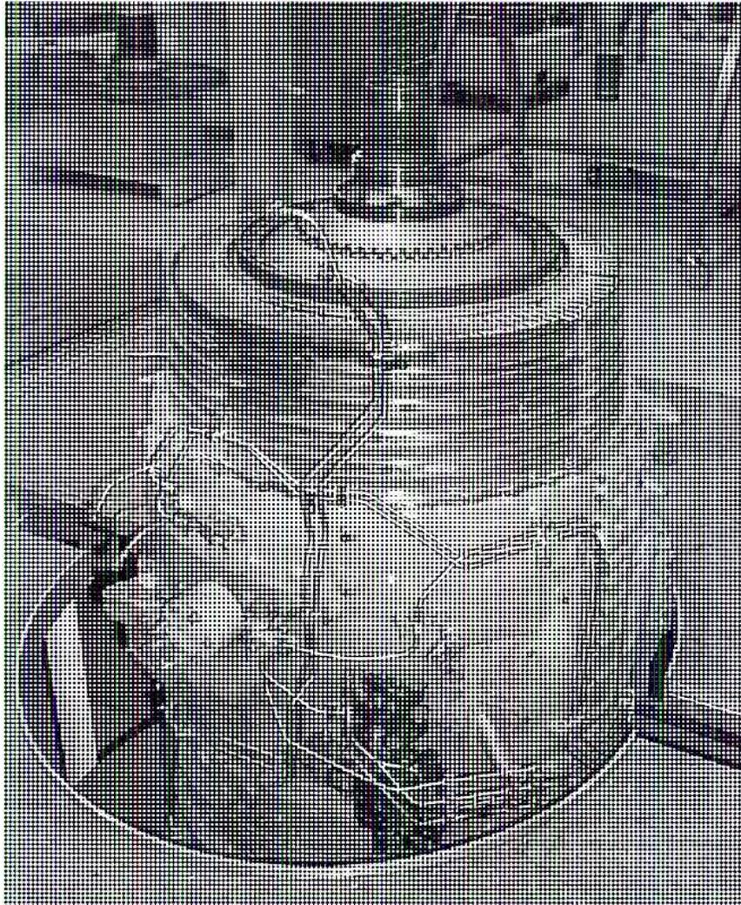
Figure 7
Engine in Hydraulic Pit
Courtesy of Strategic Maintenance Solutions Inc.
Step Two
All parts, especially blades, are carefully organized in trays (Fig. 8).
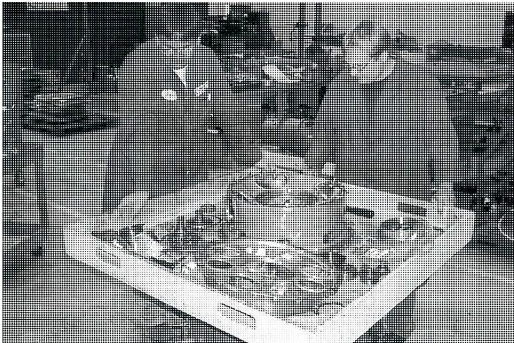
Figure 8
Parts in Trays
(Courtesy of Strategic Maintenance Solutions Inc.)
Step Three
Parts are cleaned using sandblasting, chemical cleaning tanks (Fig. 9), and ceramic media cleaning tanks.
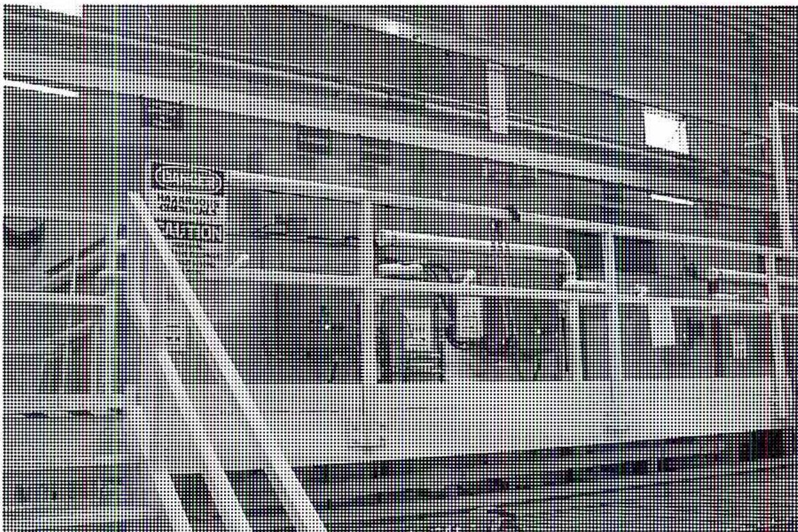
Figure 9
Chemical Cleaning Tanks
(Courtesy of Strategic Maintenance Solutions Inc.)
Step Four
Blades are checked for cracks (Fig. 10) by spraying dye penetrant on the blade and then cleaning it off. The dye remains in the cracks and can be detected under ultraviolet light.
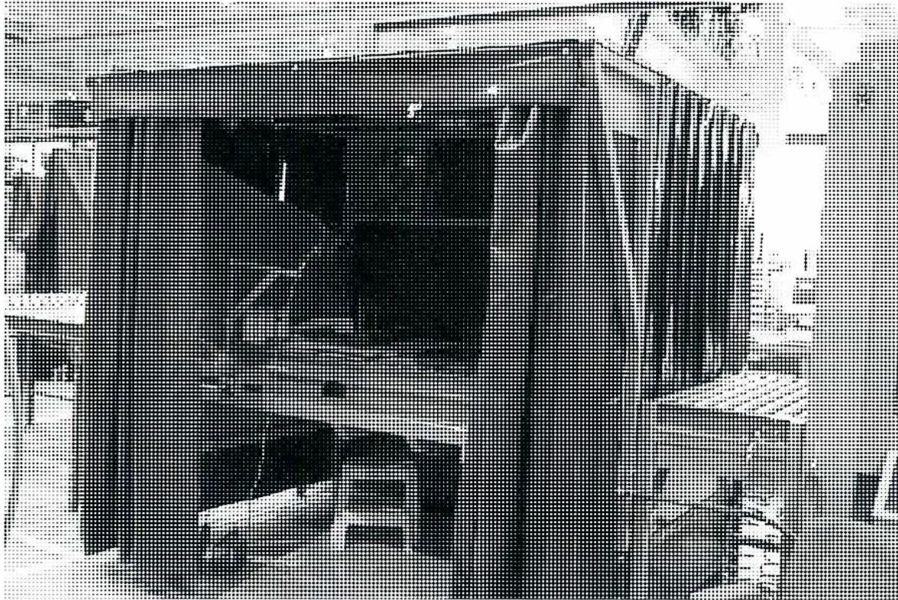
Figure 10
Ultraviolet Inspection Booth
(Courtesy of Strategic Maintenance Solutions Inc.)
Step Five
A process called dispositioning (Fig. 11) is used to decide whether components should be kept, repaired, or rejected. This is based on specific criteria such as the dimensions, type, and size of cracks, loss of coatings, and sometimes the number of operating hours.
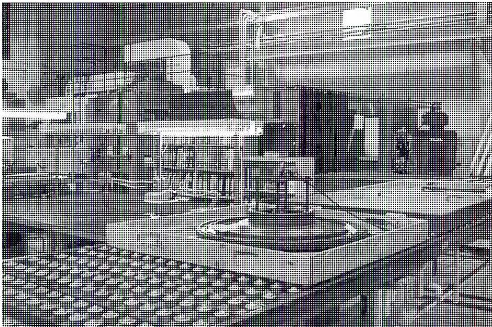
Figure 11
Dispositioning
(Courtesy of Strategic Maintenance Solutions Inc.)
Step Six
Repairs (Fig. 12) are carried out and engine parts are stored waiting for new parts.
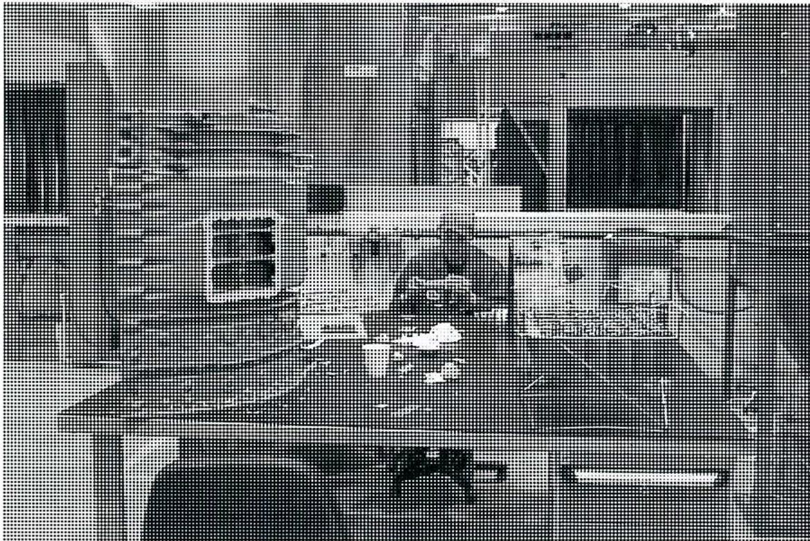
Figure 12
Repair of Parts
(Courtesy of Strategic Maintenance Solutions Inc.)
Step Seven
The rotor and blading are reassembled (Fig. 13). This usually involves carefully restacking the stages of the rotor to prevent unbalance.
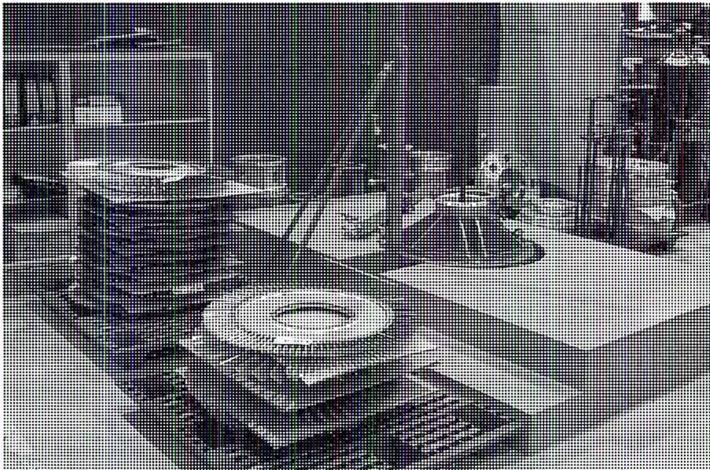
Figure 13
Reassembly of Rotor and Blading
(Courtesy of Strategic Maintenance Solutions Inc.)
Step Eight
The rotor is balanced in a balancing machine (Fig. 14) to ensure that vibration levels are within acceptable limits.
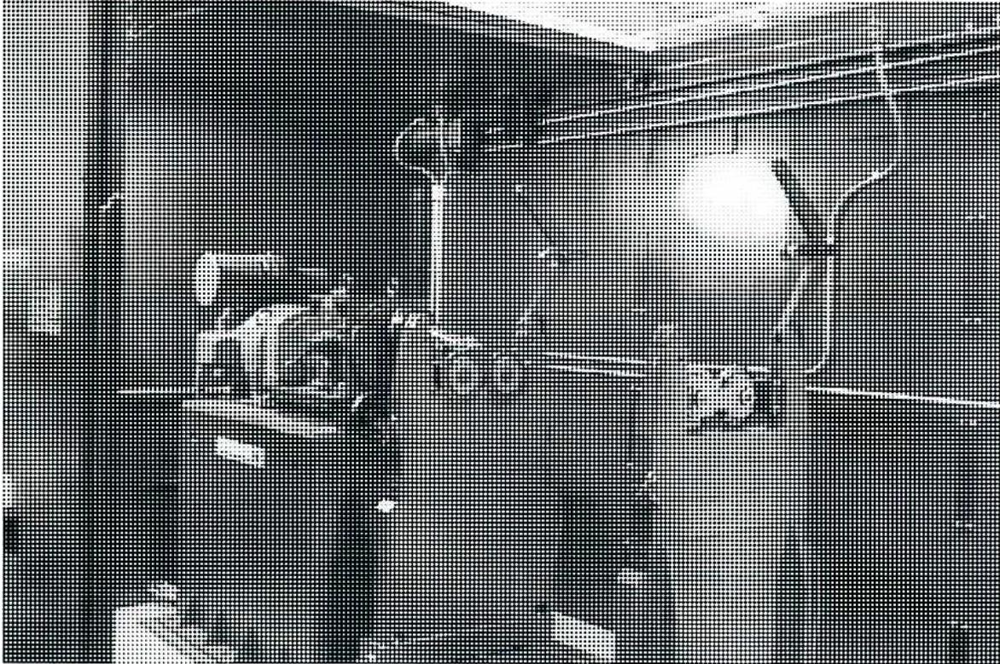
A black and white photograph showing a rotor assembly mounted on a balancing machine. The rotor is a cylindrical component with a central shaft. The machine has a dark, textured background with various mechanical parts visible, including a vertical stand and some adjustment mechanisms. The lighting is focused on the rotor and the immediate surrounding area.
Figure 14
Balancing Machine
(Courtesy of Strategic Maintenance Solutions Inc.)
Step Nine
The final reassembly (Fig. 15) takes place by assembling rotors, casings, combustion components, and all auxiliaries mounted on the engine.
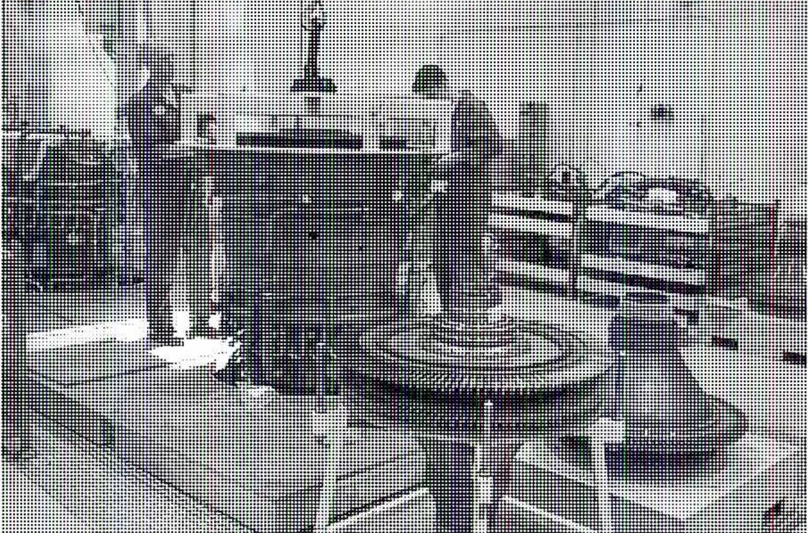
Figure 15
Final Reassembly
(Courtesy of Strategic Maintenance Solutions Inc.)
Step Ten
The engine is tested in a test cell (Fig. 16) to verify performance and check vibration levels.
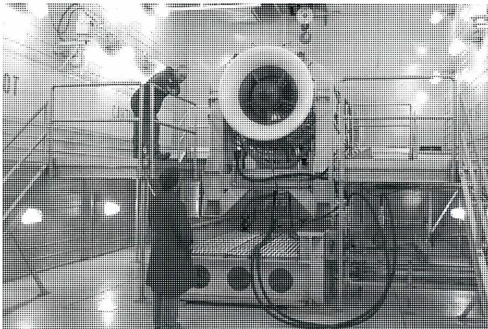
Figure 16
Engine Installed in Test Cell
(Courtesy of Strategic Maintenance Solutions Inc.)
Objective 7
Explain the troubleshooting of gas turbine problems.
INTRODUCTION
Good troubleshooting methods are important to minimize the effects of problems on equipment availability and reliability. Predictive and preventative maintenance, operating skills and techniques are of a great benefit to the operator. Current technology provides the operator and maintenance engineer with a wide variety of excellent tools with which they can track and trend all critical components of their equipment. These tools can be used to predict potential problems before they occur and thus allow the operator to respond to the issue before it impacts production or damages the equipment.
Should an incident occur, the standardized “failure analysis” procedures and programs should be used to identify the “root cause” of the problem and help develop a formalized response to eliminate the chance for the incident to re-occur.
A potential problem may become evident through human observation, routine monitoring and logging, inadequate performance (dependent on the type of load), or a control system alarm or shutdown.
The stages in troubleshooting may include some or all of these steps:
- 1. Initial problem indication
- 2. Preliminary investigation using available information (from the control system (e.g. alarm indication), log sheets, performance readings and troubleshooting guides)
- 3. Initial attempts (hopefully successful) to rectify the problem
- 4. Consultation with maintenance experts
- 5. Consultation with technical specialists or possibly the manufacturer.
General principles for effective troubleshooting are as follows:
- • Do not jump to conclusions quickly; keep an open mind and stick to the facts
- • Take time to gather relevant data and information
- • Consult others who may have important information
- • Try easy, low cost and low risk fixes or solutions first
- • Seek expert help if the problem appears to be difficult or beyond your expertise
- • Do not stop until you are sure that the problem has been solved
- • Document the problem and the steps taken to solve it on a work order or other standard form.
TROUBLESHOOTING CHARTS
For illustrative purposes only, the following troubleshooting information is presented in the form of a standard troubleshooting chart. Always consult the troubleshooting charts provided by the equipment manufacturers.
The following tables show the three aspects of troubleshooting: symptom, probable cause, and remedy. The symptom column describes what an operator might notice or detect during the operation of an engine. The probable cause column lists likely reasons for the symptom. The remedy column lists potential solutions.
Table 1 identifies the problems that might occur during the starting of the turbine.
Table 1
Troubleshooting (Starting)
| Symptom | Probable Cause | Remedy |
|---|---|---|
| Rotor fails to rotate | Permissives not cleared | Address and clear permissives |
| Correct gas or hydraulic pressure not present | Check to ensure sufficient gas or hydraulic pressure | |
| Starter motor inoperative | Repair or replace starter motor | |
| Starter clutch not engaging | Repair starter clutch | |
| Rotor is seized | If previous shutdown was recent and from full power, wait for several hours | |
| Major internal problem | Contact manufacturer | |
| Rotor rotates but fails to light off | Igniters not functioning | Check ignition system as per maintenance manual |
| Gas or liquid manifold pressure is not correct | Check fuel system as per maintenance manual | |
| Rotor speed is not sufficient | Check starter system | |
| Engine lights off but fails to reach idle speed | Air intake is obstructed | Clear intake obstructions |
| Fuel pressure is not adequate | Check fuel system as per maintenance manual | |
| Control system setting is not correct | Check control system as per maintenance manual | |
| Lube oil pump fails to switch over from prelube to main pump | Main oil pump pressure is not high enough | Check main oil pump regulator and pump performance |
| Control system setting is not correct | Check control system as per maintenance manual | |
| Check valve between oil lines not operating properly | Verify proper operation | |
| Loud bang is heard on startup | Bleed valves not operating properly | Check bleed valves as per maintenance manual |
| Inlet guide vane not operating properly | Check IGV system as per maintenance manual | |
| Engine compressor is fouled | Clean engine compressor using offline waterwash |
Table 2 highlights the conditions that may occur during the running phase.
Table 2
Troubleshooting (Running)
| Symptom | Probable Cause | Remedy |
|---|---|---|
| Speed is unstable | Fuel pressure is not correct | Check to ensure sufficient gas or hydraulic pressure |
| Control system setting is not correct | Check control system as per maintenance manual | |
| Speed probe or indicator is faulty | Repair or replace speed probe or indicator | |
| Maximum power is not obtained | Control system setting is not correct | Check control system as per maintenance manual |
| Engine compressor is fouled | Clean engine compressor using offline waterwash | |
| Long term engine deterioration | Perform borescope. If necessary schedule major overhaul | |
| Exhaust gas temperature spread is too high | Fuel nozzle is eroded | Check fuel nozzles |
| Fuel nozzle is plugged | Check fuel nozzles | |
| Instrumentation problem | Check thermocouples, harness, and connections | |
| Sudden decrease in vibration | Problem with vibration transducer or wiring | Check vibration transducer or wiring |
| Sudden increase in vibration | If only one reading affected — problem with vibration transducer or wiring | Check vibration transducer or wiring |
| If more than one reading affected — engine mountings are tight or seized | Check engine mountings | |
| If more than one reading affected — major engine problem or internal failure | Check vibration as per maintenance manual | |
| Slow increase in vibration | Long term engine deterioration | Perform borescope. If necessary schedule major overhaul |
Table 3 outlines the troubleshooting of alarms and shutdowns associated with the turbine.
Table 3
Troubleshooting (Alarms and Shutdowns)
| Symptom | Probable Cause | Remedy |
|---|---|---|
| Fuel pressure low | Fuel system leaks | Check for fuel system leaks |
| Fuel filter blocked | Check fuel filter | |
| Vibration high | Problem with vibration transducer or wiring | Check vibration transducer or wiring |
| Alarm and shutdown levels not correct | Reset alarm and shutdown levels | |
| Engine mountings too tight or seized | Check engine mountings | |
| Major engine problem or internal failure | Perform borescope. If necessary schedule major overhaul | |
| Loss of speed signal | Speed probe has failed | Check and replace speed probe |
| Problem with wiring and instrumentation | Check wiring and instrumentation | |
| Lube oil supply pressure low | Tank level too low | Refill oil tank |
| Lube oil pump not supplying correct pressure | Check and replace lube oil pump | |
| Regulator not set correctly | Check setting for regulator | |
| Oil tank temperature too high | Tank level too low | Refill oil tank |
| Oil cooler thermostatic valve not operating properly | Check and reset thermostatic valve | |
| Oil cooler is plugged | Repair oil cooler |
Chapter Questions
B1.8
- 1. Describe the functions of a gas turbine control system.
-
2. List the monitoring points that are associated with the following gas turbine systems protection:
- a) Oil
- b) Combustion
- 3. What steps are followed to prepare a gas turbine for startup?
- 4. Describe the steps to be followed in the normal shutdown of a gas turbine.
- 5. Discuss the methods used to waterwash gas turbine blades, including the type of cleaners used.
- 6. Discuss the steps involved in the overhaul of an aeroderivative gas turbine.
- 7. Briefly outline the symptom, probable cause and remedy for a high vibration alarm to annunciate.